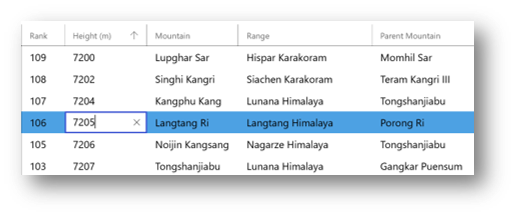
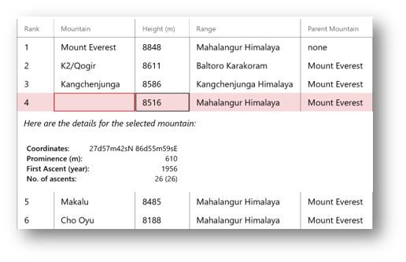

How to: Implement editing and input validation in DataGrid control (Archived)
Warning
This document has been archived and the component is not available in the current version of the Windows Community Toolkit.
While there are no immediate plans to port this component directly to 8.x, it's important to understand that:
- The WCT 7.x DataGrid is still usable alongside WCT 8.x components for existing projects.
- The DataGrid control has been deprecated in favor of the new DataTable component.
For new development, we recommend using the DataTable component which offers improved functionality and is actively maintained. If you have specific needs that DataTable doesn't meet, please consider contributing to WCT Labs where component improvements are prototyped and incubated.
For more information:
- DataGrid (Archived) concept docs
- DataGrid discussion in Labs
- Community Toolkit GitHub repository
- Documentation feedback and suggestions
Original documentation follows below.
Cell and Row editing
The DataGrid control supports cell and row editing functionality. By default, you can edit items directly in the DataGrid. The user can enter edit mode in a cell by pressing F2 key or double tapping on a cell. Alternatively, you can set the DataGridColumn.IsReadOnly property to true to disable editing in specific columns of the DataGrid.
<controls:DataGrid BeginningEdit="dg_Editing" CellEditEnding="dg_CellEditEnding" RowEditEnding="dg_RowEditEnding" />

A cell-level edit is committed when you move to another cell in the same row. All edits in a row are committed when you press ENTER or move to another row.
To guarantee that edits can be committed and canceled correctly, the objects in the DataGrid must implement the IEditableObject interface.
Editing methods and events
The following table lists the methods and events supported by DataGrid for cell and row editing functionality.
| Type | Name | Description |
|---|---|---|
| Method | PreparingCellForEdit | Occurs when a cell in a DataGridTemplateColumn enters editing mode. This event does not occur for cells in other column types. |
| Method | PrepareCellForEdit | Occurs when a cell in a column derived from DataGridColumn enters editing mode. This event does not occur for cells of type DataGridTemplateColumn. |
| Method | BeginEdit | Causes the data grid to enter editing mode for the current cell and current row, unless the data grid is already in editing mode. |
| Method | CommitEdit | Causes the data grid to commit the current edit to the data source, and optionally exit editing mode. |
| Method | CancelEdit | Causes the data grid to cancel the current edit, restore the original value, and exit editing mode. |
| Event | BeginningEdit | Occurs before a cell or row enters editing mode. This event lets you perform special processing before a cell or row enters editing mode. |
| Event | CellEditEnding | Occurs when a cell edit is ending. You can cancel this event by setting the Cancel property of the e argument to true in the event handler. If this event is not canceled, the specified EditAction will be performed to commit or cancel the edit. After the edit has been successfully committed or canceled, the CellEditEnded event occurs. |
| Event | CellEditEnded | Occurs when a cell edit has been committed or canceled. |
| Event | RowEditEnding | Occurs when a row edit is ending. You can cancel this event by setting the Cancel property of the e argument to true in the event handler. If this event is not canceled, the specified EditAction will be performed to commit or cancel the edit. After the edit has been successfully committed or canceled, the RowEditEnded event occurs. |
| Event | RowEditEnded | Occurs when a row edit has been committed or canceled. |
Enumerations
- DataGridEditAction enumeration : Specifies constants that define what action was taken to end an edit. Supported members are:
- Cancel: Edit was canceled.
- Commit: Edit was committed.
- DataGridEditingUnit enumeration : Specifies constants that define whether editing is enabled on a cell level or on a row level. Supported members are:
- Cell: Cell editing is enabled.
- Row: Row editing is enabled.
Input Validation
DataGrid control supports input validation through INotifyDataErrorInfo in your DataModel or ViewModel. Implement data validation logic by implementing DataErrorsChangedEventArgs, HasErrors and GetErrors methods. The DataGrid control automatically shows the error UI in the editing cell/row when the error conditions are met.

See DataGrid Sample for an example of how to handle input validation in the DataGrid control.